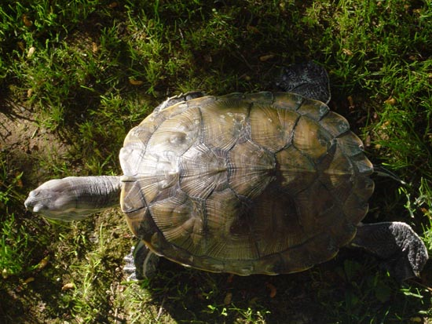
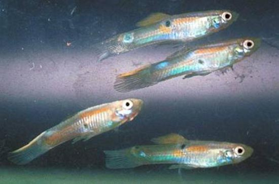
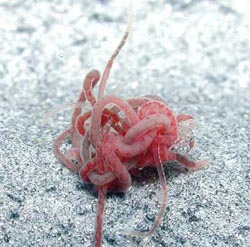
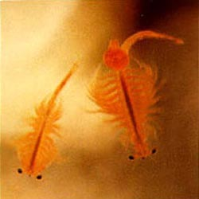
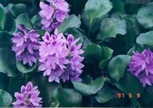
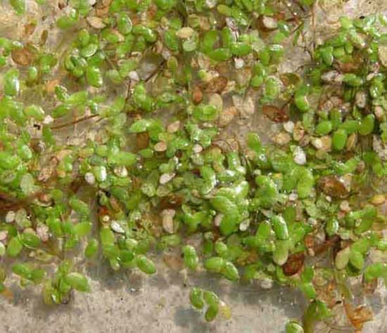
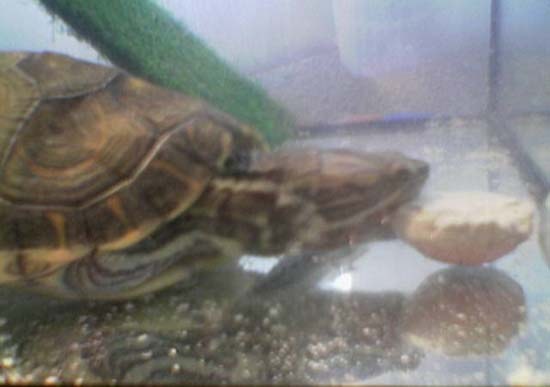
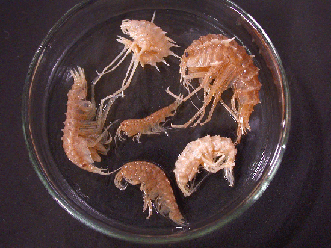

|
LA ALIMENTACIÓN DE LAS TORTUGAS
ACUÁTICAS
María José Navarro, 2005
Hay una enorme variedad de tortugas consideradas acuáticas o semiacuáticas que proceden de hábitats muy diversos y con costumbres
muy diferentes, por lo que hablar de tortugas acuáticas resulta un
poco impreciso y sería inapropiado si hablásemos de otras condiciones
de mantenimiento. Pero, quizá, podamos hacer la excepción de
referirnos a ellas en su conjunto para hablar de la alimentación.
La alimentación de las tortugas acuáticas y semiacuáticas es omnívora,
aunque varía la proporción de proteínas, vegetales y frutas que
consumen en función de la especie, del hábitat y de la edad.
Son, esencialmente, carnívoras cuando son pequeñas, ya que necesitan
altos contenidos de proteína para afrontar las necesidades de su
rápido crecimiento. Y son, esencialmente, herbívoras cuando son
adultas, que es cuando el crecimiento se ralentiza y necesitan ingerir
menos proteínas. Además, con la edad, pierden la agilidad que les
permite cazar presas vivas, por lo que se adaptan a un tipo de
alimentación más vegetariana. Aunque nunca rechazan un pedacito de
carne, un gusano, un pececillo o cualquier otra proteína, incluso
carroña, que sea fácil de conseguir.
Para precisar con más detalle la alimentación, tomaremos como ejemplo
a las tortugas del género Trachemys, que son las que con más
frecuencia se encuentran en las tiendas de animales. Las Trachemys, en
su ambiente natural, se alimentan básicamente de pequeños peces y
crustáceos, caracolillos de agua, insectos, lombrices de tierra,
ranas, renacuajos, huevos de peces e insectos, larvas y plantas
acuáticas, aunque tampoco desprecian la carroña.

Trachemys
scripta emolli.
En
cautividad, es importante para asegurar su salud que tengan una dieta
variada, de la que pueden formar parte:
•
Algunos animales vivos, como grillos, tenebrios, lombrices de tierra,
caracoles de agua, guppies.... Los grillos y las lombrices de tierra
vivos son muy aconsejables para las tortugas, ya que contienen muchos
nutrientes, aunque hay discusiones acerca de la digestibilidad del
exoesqueleto de los grillos. Además, les estimula perseguirlos y
cazarlos. En las tiendas de animales especializadas en reptiles y en
las de artículos de pesca, se venden vivos y también se pueden criar
fácilmente. Se les puede ofrecer larva roja, tubífex, artemia
salina.
Los pequeños caracoles de agua representan un buen alimento natural y,
al mismo tiempo, ayudarán a filtrar el agua porque se comen el
alimento que la tortuga no ingiere. Es siempre mejor criar el alimento
vivo, porque el silvestre puede transmitir muchos parásitos.

Guppies.
(1)
|

Tubiflex.
(2) |

Artemia Salina.
(3) |
•
Carne cruda de ternera, vaca, pollo, pavo... Se le puede proporcionar
en pequeñas cantidades porque tiene mucha grasa, con lo que puede
ocasionarle obesidad. Por otra parte, la proporción de Ca/P no es la
más adecuada (esta proporción debería ser, al menos, superior a 2).
Además no le proporciona todos los nutrientes que la tortuga necesita.
Con el pollo crudo, hay que tener cuidado por una posible infección
por salmonela. Se le puede ofrecer ocasionalmente un trozo de pollo,
preferiblemente cocido sin sal ni especias. Si la carne contiene
músculos, tendones y pequeños huesecillos, mejor. A medida que crecen
es conveniente sustituir la carne por el pescado.
•
Hígado crudo de ternera, pollo, o mejor todavía de pescado, debe
formar parte una vez al mes de la dieta de la tortuga, porque aporta
vitaminas A y D.
•
Pescado crudo, preferiblemente de río. Lo más adecuado son los peces
pequeños enteros con espinas y vísceras (tipo guppies, mejor si son
criados, porque los silvestres pueden ser portadores de bacterias).
Ocasionalmente se le pueden ofrecer otros tipos de pescado que
contengan pequeñas espinas y vísceras, porque son una importante
fuente de calcio y vitaminas. Los boquerones o charales frescos (no
secos) y las cabezas troceadas del pescado crudo son una buena opción.
•
Se les puede proporcionar también mejillones, gambas, almejas,
calamares crudos.
•
Ocasionalmente se les puede ofrecer huevo cocido con trozos de cáscara
(hay que lavar el huevo previamente y cocerlo sin sal).
•
Vegetales y frutas. Algunas tortugas aceptan bien: zanahoria, lechuga,
escarola, endibias, tomates, pepino, calabacín, etc. (hay que evitar
las espinacas por el alto contenido en ácido oxálico, que puede
alterar el funcionamiento del riñón y produce cálculo renales, y las
coles, que contienes tiocianatos que alteran la producción de hormona
tiroidea y pueden producir bocio). En pequeñas cantidades y
ocasionalmente, se les puede incluir frutas como: manzana, pera,
higos, papaya, melón, plátanos, moras, etc. (evitando los cítricos).
Hay que tener cuidado porque el exceso de fruta puede aumentar la
población de parásitos intestinales. Si la tortuga no acepta las
frutas y los vegetales, hay que agregar a su dieta un suplemento
vitamínico con vitamina A. Cuando la tortuga crece, le encantará comer
plantas acuáticas, como: jacinto de agua (Eichhornia crassipes),
elodea (Egeria densa), lentejas de agua (Lemma minor)... Agregar
plantas acuáticas al acuario o al estanque y a la dieta de la tortuga
es una excelente idea porque éstas contienen altos índices de vitamina
A y además proporcionan un lugar para esconderse, ayudan a la
oxigenación del agua y a su filtrado biológico. Deberemos estar
dispuestos a cambiar estas plantas con frecuencia porque las tortugas
acabarán pronto con ellas.
|
Elodea
(Egeria densa).
(4) |

Jacinto
de agua (Eichhornia crassipes).
(5) |

Lentejas de agua
(Lemma minor).
(6)
•
El pienso para tortugas acuáticas en forma de sticks, puede
proporcionar una buena base de la alimentación de las tortugas
acuáticas, aunque debe ser completado con el resto de los nutrientes.
Hay que elegir el que tenga el contenido nutricional más equilibrado,
que contenga alrededor del 35% de proteína y además calcio y
vitaminas. Algunos criadores utilizan también pienso para truchas y
pienso para gatos. Aunque hay que vigilar que el contenido no sea
demasiado graso ya que estos piensos están más diseñados pensando en
un crecimiento rápido de otros animales, sobre todo en el caso del
alimento para truchas.
• Hay que aportarles calcio, preferentemente en forma de carbonato
cálcico, que se puede espolvorear sobre su comida. Pero dado que comen
en el agua, una gran parte de este calcio se perderá disuelto en ella.
Por eso es más importante que se les alimente de pescado que contenga
pequeñas espinas que les proporcionará el calcio que necesitan.
También el hueso de sepia añadido entero al acuario es una excelente
fuente de calcio para la tortuga, además de que le ayudará a afilar su
pico y sus uñas y la mantendrá ocupada intentando atraparlo. Se pueden
encontrar fácilmente en la sección de aves de las tiendas de animales.

Mordisqueando el calcio.
•
Sólo en los casos en los que la tortuga no tenga una dieta
equilibrada, se pueden agregar suplementos vitamínicos para tortugas
una o dos veces por semana, que incluyan vitamina A, pero con ciertas
precauciones porque la sobredosis de esta vitamina es tan perjudicial
como su carencia. La vitamina A es esencial para la salud ocular y el
buen estado de las mucosas y epitelios. La tortuga necesita también
vitamina D, que obtiene a partir de provitaminas que se ingieren con
los alimentos y que se activan por acción de la luz del sol (radiación
UVB), transformándose en vitamina D3. En los casos en los que la
radiación solar sea insuficiente, deberá proporcionársele vitaminas
del grupo D, sobre todo, vitamina D3 (colecalciferol). La vitamina D3
es esencial para el metabolismo del calcio, que permite fijar este
calcio en los huesos y el caparazón. Pero su exceso también es
peligroso.
En general, hay que evitar los alimentos elaborados (jamón cocido,
salchichas...) los alimentos salados y especiados (jamón serrano,
quesos, embutidos, fiambres...), los alimentos dulces (galletas,
chocolate...), las grasas (carne picada...) y, aunque las tortugas
pueden aceptar un trozo de pan, pizza, cereales, etc, no es
conveniente usar esos productos, a pesar de que estén recomendados en
alguna bibliografía, ya que no son parte de su dieta natural y podrían
ocasionarle algún trastorno.
En las tiendas de animales suelen ofrecer a las personas que compran
una pequeña tortuguita acuática, un botecito que contiene pequeñas
larvas y gambitas o camaroncitos secos (gammarus) como alimento para
la tortuga. Los gammarus no son un alimento aconsejable en absoluto,
porque carecen de los nutrientes que la tortuga necesita para
desarrollarse de manera equilibrada. Las tortuguitas alimentadas con
gammarus muy pronto suelen presentar enfermedades nutricionales y
metabólicas graves (desnutrición, trastornos óseos de crecimiento, EOM,
etc) que podrían ocasionarles la muerte. También se ha relacionado los
gammarus con cierta bacteria que provoca SCUD (Enfermedad cutánea
ulcerativa septicémica relacionada con la podredumbre del caparazón y
que está causada por infección de hongos o de bacterias).

Gammarus.
(7)
En
cuanto a la frecuencia de la alimentación, las tortugas acuáticas
tienen un apetito voraz y piden continuamente alimento. Pero si se les
sobrealimenta pueden enfermar. Durante su primer año de vida se les
puede alimentar diariamente una sola vez al día. Durante su segundo
año, cada dos días y, posteriormente se les debe alimentar dos veces
por semana.
La cantidad de alimento es siempre un tema complejo, porque depende
del tipo de comida que se le proporcione, de la edad, del tamaño de la
tortuga y de la actividad que desarrolle. Pueden comer más cantidad
pero con menos frecuencia o una pequeña cantidad todos los días. Si el
alimento es más graso o con más contenido proteico, se le debe
suministrar menos cantidad con el fin de evitar la obesidad. Para
evaluar si la tortuga está obesa, se puede observar si cuando esconde
la cabeza y las patas dentro del caparazón, la piel de alrededor se
despliega hacia afuera como si fueran bolsitas. En este caso se debe
revisar y cambiar la dieta y disminuir la frecuencia de alimentación.
La gravedad que tiene la obesidad depende de la edad de la tortuga.
Una baby de pocos meses puede estar un poco “regordeta” porque su
crecimiento suele ser muy rápido y pronto consumirá las reservas
acumuladas. Pero la obesidad en una adulta puede tener repercusiones
negativas sobre su salud.
No es necesario ofrecerles todos los nutrientes en cada comida, sino
alternar estos alimentos para que la tortuga no presente carencias
nutricionales. A veces las tortugas, tienen una dieta muy restringida
porque aceptan sólo un tipo de alimento, en ese caso se les debe
acostumbrar poco a poco a comer de todo. Otras veces rechazan comer un
tipo de alimento que antes aceptaban y desean comer algo diferente.
Esto es normal, la alimentación variada resolverá este problema. Lo
preocupante es cuando se niegan a comer completamente, esto es uno de
los síntomas de enfermedad.
BIBLIOGRAFÍA
Avanzi, M. Y Millefanti, M. (2004) El gran libro de las tortugas.
Barcelona: Editorial De Vecchi
Fröhlich, F. (1997) Tortugas de agua dulce. Barcelona: Ediciones
Omega
Millefanti, M. (2002) Las tortugas acuáticas. Barcelona: Editorial
De Vecchi
Müller, G. Tortugas terrestres y acuáticas en el terrario.
Barcelona: Ediciones Omega.
Wilke, H. (2005) Tortugas. Barcelona: Hispano Europea.
(1)
Foto tomada de http://courses.washington.edu/fish340/
(2)
Foto tomada de http://www.akvariumas.lt/straipsniai/zuvu_maitinimas.shtml
(3)
Foto tomada de http://www.acuariolasmercedes.com/artemia-salina-reservacion.htm
(4)
Foto tomada de http://www.petpet.ne.jp/zukan/wplantinfo.asp?page=1&Kind=66
(5)
Foto tomada de http://biotech.tipo.gov.tw/plantjpg/Eichhornia%20crassipes.jpg
(6)
Foto tomada de http://www.fungoceva.it/erbe_ceb/lemma_minor.htm
(7)
Foto tomada de
http://www.hokudai.ac.jp/science/science/H16_11/seibutsu/mawatari_kajihara.htm
|